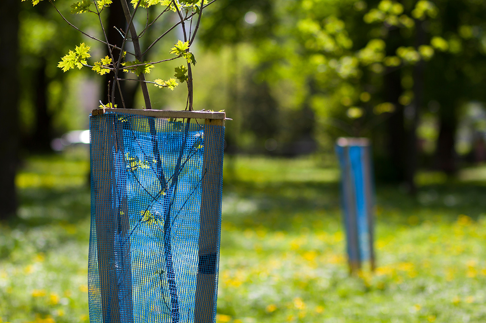
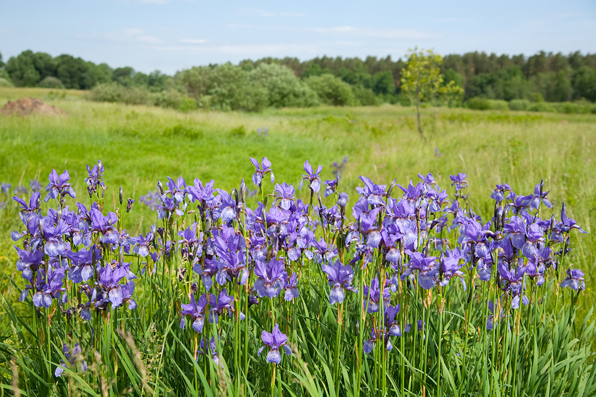
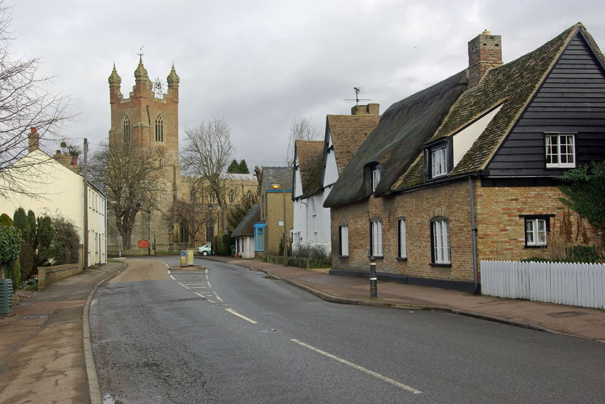

Ecology & Community
Environmental stewardship and responsible land management are central to the long-term vision for the site. The project is transitioning the land from arable farmland and pasture to a wood pasture landscape (opens in a new tab) of parkland, open grassland, and increased woodland.
Landscape Management
Existing tree lines will be retained, with more cover and less intensive land use bringing new opportunities to the wide range of wildlife already living in the area.
The site is well connected to the wider landscape and those features will be being retained. Additional tree cover will help to provide more varied structure.
Reduced grazing and increased tree cover will alow soils to stabilise, improving structure and water retention.

Habitat and Biodiversity
These changes can lead to secondary ecological benefits, supporting more diverse plant communities and improved structural complexity.
Over time this will create stable, realisation habitats offering increased opportunities for invertebrates, herpetofauna, birds and mammals.
The site remains open countryside for most of the year, allowing natural habitats to develop alongside its use for events, while enabling measurable biodiversity uplift to be achieved.

Community Engagement
Unknown Worlds works constructively and responsibly with the surrounding community.
The organisation is engaging with the parish council and local stakeholders as plans develop, maintaining good relationships with nearby villages and ensuring responsible operation of the site.
Events bring modest economic benefits to the local area through visitors making use of local shops, accommodation, and hospitality businesses.
